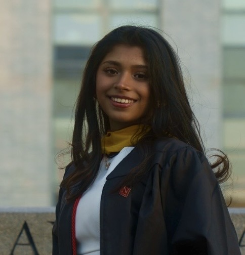

About Me
Hi! My name is Melissa Rejuan. I grew up in Staten Island, New York, and moved to Boston in 2021 to pursue a bachelor’s degree in Data Science and Journalism at Northeastern University. I graduated in fall 2025 and continued my education at Northeastern, pursuing a master’s degree in Data Science through the PlusOne program. My time at Northeastern was deeply valuable. I did my first co-op at Insulet and my second at The Boston Globe. I also studied abroad in Spain for a few months and produced a short documentary while I was there. After I came back, I decided to pursue my own venture! I co-founded a startup called Navda AI, where we provide AI receptionist services across various industries. Outside of school and work, I love to cook, bake, and watch documentaries, and I’m a big history fan. I also love spending time with family and friends and going on runs, especially at scenic parks!